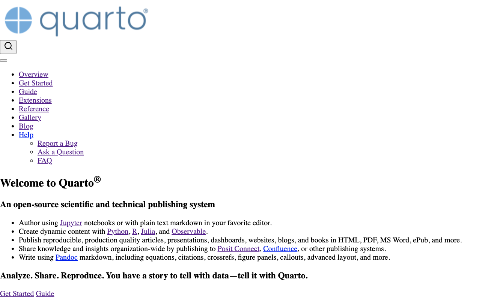
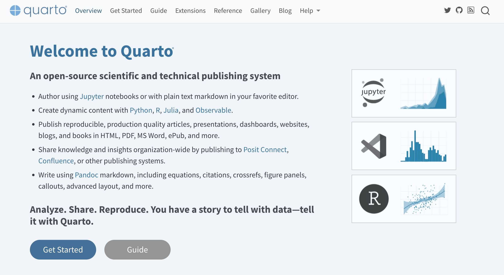
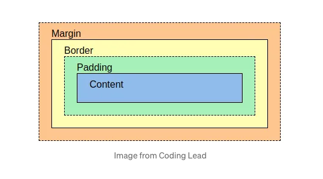

Cascading Style Sheets is a style sheet language used for specifying the presentation and styling of a document


HTML syntax in 5 minutes
HTML (HyperText Markup Language) is built on tags like
<html></html> and <div></div>
Tags can be nested <div><div></div><div></div></div>
<div><div></div><div></div></div>
HTML structure
Is built around 3 main tags:
<html>
<head>
<body>
<!DOCTYPE html><html><head><link rel="stylesheet" href="styles.css"></head><body><h1> I'm a header</h1><p> Here is some text in a paragraph</p></body></html>
HTML head
contains:
meta information
style sheets
and sometimes scripts (mostly javascript)
95% of this will be handled by Quarto for you
HTML body
Contains everything else
Common HTML tags
Headers
<h1>, <h2>, <h3>, <h4>, <h5>, <h6>
Paragraph
<p>
links
<a>
general div
<div>
HTML attributes
All HTML elements can have attributes
They provide additional information about the elements
Are always specified at the start-tag
Done by using name-value pairs: name="value"
Classes and ids
<h1 class="title" id="special-title">
Images source attribute
<img src="img_girl.jpg">
Where is the code for styling?
inline style
<h1 style="color:red;">Welcome to styling 101</h1>
Find an element that would benefit from having a pseudo-class
:hover is a safe choice, but not the only one
Apply pseudo-class to said element
Cascading
Stylesheets cascade — at a very simple level, this means that the origin, the cascade layer, and the order of CSS rules matter. When two rules from the same cascade layer apply and both have equal specificity, the one that is defined last in the stylesheet is the one that will be used.
h1 looses to h1.title-class because h1.title-class is more specific
Attributes
The attributes are instructions on how elements should look and behave.
How things look
colors
sizes
border lines
etc
How elements are positioned to other elements
Layout
Layout

Layout
Content - The content of the box, where text and images appear
Padding - Clears an area around the content. The padding is transparent
Border - A border that goes around the padding and content
Margin - Clears an area outside the border. The margin is transparent
As with all things, this is not a hard and fast rule.
you can use fewer or more colors
https://codegoda.io/
notice that they use their colors carefully and consistently
Choosing fonts
Use readable and web-friendly fonts - common fonts are by definition readable as they are familiar - fonts are designed to be used in different areas, optimize for web fonts - don’t pick too many fonts
Maintaining accessibility
What is web accessibility?
Web accessibility is the practice of creating websites that are usable for all visitors regardless of a disability or impairment. To fulfill web accessibility best practices, you must create a site that complies with certain design and development guidelines that ensure your site is set up to accommodate folks with disabilities. This ensures that all users have the same or similar experience regardless of ability.